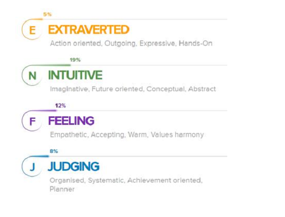
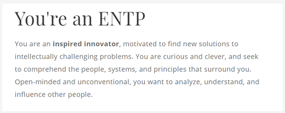
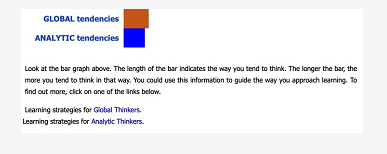
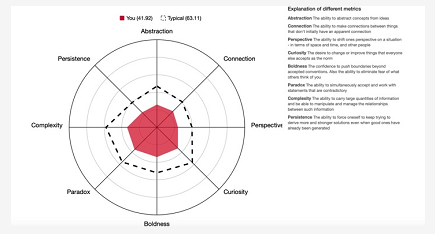
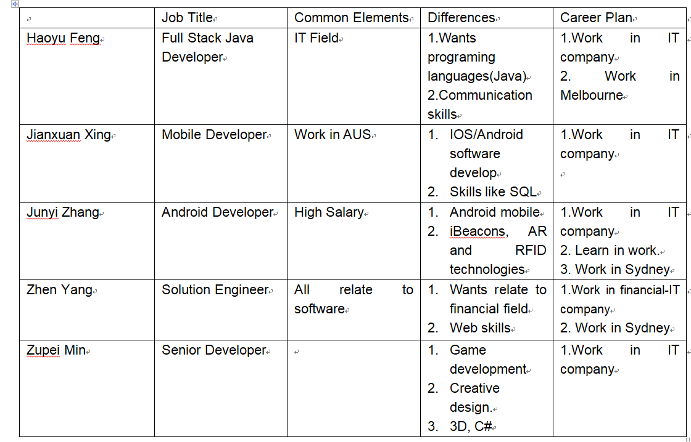
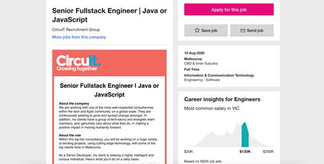
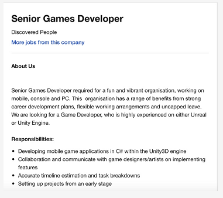
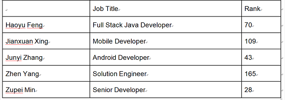
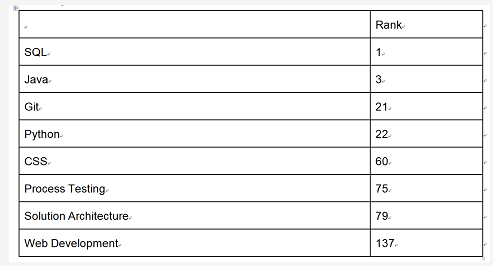
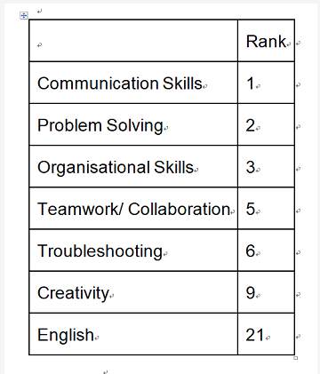

Team Profile

Team AC
①Junyi Zhang froms Team AC, student number is s3701407, student email is s3701407@student.rmit.edu.au. I was an overseas VCE student who can speak Chinese and English. Before coming to Australia, I played badminton pretty well. After experiencing the culture of Australia, I started to get in touch with skateboarding, because I often saw groups of skateboarders on the road, and the skateboarding culture slowly affected me. I also raised a very cute lop-eared rabbit and it is one year old.The richness and creativity of the IT industry has attracted me deeply. I can develop software that I can think of or design a web page that I am satisfied with, and so on. At the same time, the salary level in the IT industry is also considerable. After possessing a certain ability, as an IT staff, you can often get a good salary to support yourself and prove your value to the society. My interest in IT started three years ago. I have a friend who understands IT much better than me, so I usually talk to him about this aspect. My interest in IT is a cumulative process.
According to the online learning style test, I am a visual learner.
The result is:
As a visual learner, I can learn by reading or viewing pictures, and I can understand and remember things visually. I can imagine what I have learned in my mind and learn best by using mainly visual methods.
The Personality test result:

the result of MBTI:

According to the online learning style test, I am a visual learner.
The result is:
As a visual learner, I can learn by reading or viewing pictures, and I can understand and remember things visually. I can imagine what I have learned in my mind and learn best by using mainly visual methods.
In a team,I think working in real life can help me complete the team work in a down-to-earth manner. I prefer to put my energy into real life. It represents I will achieve victory in life in a way that does not attract attention. At the same time, I will save more energy and concentrate on my work. So I prefer a quiet and simple life. I prefer to be a contributor and follow the assigned tasks to complete with all my strength. At the same time, I will also learn the way of leader management team.
②ZHEN YANG,a Chinese boy from Team AC who is 20 years old now.This is my first semester of bachelor of information technology.Actually,I completed English training at REW from August to December last year.My nick name is Melo, probably some people are familiar with this name,that's because I used the name of one of my idols. He is a famous NBA star named Carmelo Anthony,people like to call him Melo. I am interested in almost all mainstream sports but most of them are just limited to watching games.Even if I don not participate in some sports in reality,however,the excitement of sports games still attract me deeply.So far I am more interested in security in IT. In fact, I do not know much about the IT field, but security is an absolutely indispensable part of the IT industry. Although the security in IT is complex and difficult like the encryption and decryption of various instructions, the principles are worthy of research. Honestly,so far I have no IT experience because I just study in university.Probably the only one experience is I have design a mini application as final exam when I studied in China's university.
The result of MBTI test:
Talent analysis: your personality type tendency is " ESFP " (extroverted real feeling perception tendency: E57, S58, F61, P74, thoughtless index: 11) Outgoing, friendly and tolerant. Love life, humanity and material enjoyment.
The result of Learning style test:
Visual is your primary learning style.
Auditory is your secondary learning style.
Kinesthetic is your least preferred learning style.
The result of Big Five Personality test:
O:48% C:56% E:60% A:67% N:29%
The results of the test shows that I am a friendly, outgoing and easy to get along with. I feel that this personality can help me quickly establish friendship and cooperation with other people in the team, and I can use the learning method that suits me to play an appropriate role in team work and share experience with my teammates.In the team, I will try to work in a practical way to be responsible for our teamwork.
③I am HAOYU FENG from CHINA, a boy born in 1999 who froms Team AC. You can call me Brook. I do not have religion. I studied Computer Science and Technology at Beijing Normal University, Zhuhai campus (BNUZ) for two years from 2017 to 2019. There is the collaboration between RMIT and BNUZ so I choose to study bachelor of Information and Technology at RMIT for two years to get double bachelor degree certificate. Now I can speak Chinese and English and I hope to master Japanese in the future. Watching anime in pastime leads to my interest in Japanese. Actually, basketball is my favorite hobby. Russell Westbrook, an NBA star, is my favorite player. I am willing to try new things and enjoy communicating with people. The interesting point is that when people discuss the same thing, they often get different opinions and perspectives.I like mathematics very much and I like to solve problems with logical thinking. I feel a strong sense of accomplishment when problems are solved so I prefer IT to other majors.I joined the ACM Association before.Teachers and seniors taught me some simple algorithms and data structures which help me a lot in IT field.
The TypeFinder Personality Test: You are analytical and objective, and like bringing order to the world around you. When there are flaws in a system, you see them and enjoy the process of discovering and implementing a better way. You are assertive and enjoy taking charge; you see your role as that of leader and manager, organizing people and processes to achieve goals.
The learning style test: You are a Tactile learner! You learn by touching and doing. You understand and remember things through physical movement. You are a "hands-on" learner who prefers to touch, move, build, or draw what you learn.
The Big Five Personality Test: Openness (56%); Conscientiousness (48%); Extraversion (52%); Agreeableness (65%); Neuroticism (27%).
As for me, I will use my strengths and avoid procrastination. And what I need to do is share these results with my teammates in order for them to know more about me and to work together more effectively.In the group cooperation, I am willing to share my own opinions and pay more for the group. The online learning Style test shows that I am a tactile learner, so I should improve my work efficiency by understanding real objects.The tests show that I am a person who like rational analysis and solving problems through logical thinking, and I have a strong sense of responsibility. it is easier for me to unify the direction and make efforts for it in a team.
④My name is Zupei Min(Jack), froms Team AC. I am 20 years old who come from China, when l finished my junior middle school, l came to Melbourne. Chinese is my first language, and English is my second language. As for me, l had learnt 3 years Information Technology in my junior middle school. However, when l started my high school in Melbourne, l did not choose IT course, hence l did not have deep foundation for IT before the university.When l entering high school, l began to discover the magic of computers. School encourages us to using the laptop, l have to learn more functions to help the study. The most interesting part of computer for me, is that to design the games. Especially, when you playing a game, it can not meet your needs, or you have a good idea for the improvement of this game. Hence, to develop a game that can catering to young people taste, and can catch people eyes at the first time is my dream. Overall, although at the beginning, l did not have elementary knowledge about IT, but it is also my advantages, I will be commit to make these boring web pages, injecting cultural features, and designing a more colorful Internet, the curiosity about information technology will push me forward.
Myers-Briggs Test:
Learning Style Test:

Creativity Test:

In my opinon, the creativity for the software desgin is very necessary, only have enough creativity, then you can use your own imagination to establish your own IT world in your software. In the test, my creativity is like in the middle, hence l will improve my creativity in the next few years, to show the design concept of unique style that makes people feel fresh and curious.
⑤My name is Jianxuan Xing ,from Team AC, a RMIT student, i am a international student from china, It has been five years since I came to Melbourne in 2015. My high school in ringwood secondary college is really a place full of memories. After three years of high school life, I successfully passed the VCE exam and finally entered my dream. RMIT. I like playing basketball and computer games such as league of legend, CSGO, I also have a cute guinea pig. He is very timid, but he likes me very much.i was in RMIT last year for diploma of IT. When i was in high school, i have learned PY charm, and also going to the work shop to help teacher with his work, since that moment i feel that I have an indissoluble bond with IT，that is why i want to learn IT is i am really intrested in mobile app, database and create website.
I think IT is one of the most promising industries at the moment, because now is the era of big data, the popularisation of the Internet and mobile phones makes the current society very convenient. In summary, the IT industry is very promising. Prospects, this is one of the reasons why I choose IT.
Test Results:
http://www.educationplanner.org/students/self-assessments/learning-styles-quiz.shtml?event=results&A=9&V=8&T=3
https://www.truity.com/personality-test/17315/test-results/24661950
in the big five personality Your personality traits interact to create unique patterns of thought and behavior. In this section, you'll learn how your traits work together to drive the way you interact with the world. To describe your personality patterns, we use a circular graph called a circumplex. The circumplex is used by psychologists to illustrate how two traits intersect to create more complex patterns of thought and behavior. Each circumplex has four sections, with each section describing a typical pattern. The area of each section shows how well that pattern describes you. A larger area indicates a better fit for that pattern. Some circumplex graphs will show a clear preference for one pattern. Others will show a more even spread over two or even three patterns. Where you have nearly equal scores for two or more patterns, you can expect that both patterns may describe you equally well. The results given by these two tests prove that I am a very sensitive person who can make very precise plans. In the team, I can act as the leader of the plan and assign the plan. I can quickly realize the problem of the plan. , It is of great help to the whole team, and I also have many shortcomings in the process of learning. Education planner test results suggest me （Remember that you need to hear things, not just see things, in order to learn well.）
Ideal Job

①Junyi Zhang
First of all, working in this company can greatly improve my work ability. Secondly, the reason why this job attracts me is that the general salary of this job is 130k a year. This is also an important reason why I expect this job.
This job requires knowledge of a certain Android or iOS system, and development of mobile applications, so basic JAVA and Android studio must also be used. Currently this company is still writing native applications, the direction is iBeacons, AR and RFID technologies, I have not learned about these aspects, I believe I can learn more in the near future.
②Zhen Yang
I think that for this position is to provide IT services to financial companies, especially for maintaining the company's website and responsible for the security of the website. And to provide IT technical support to customers and service providers. What attracts me most about this position is that it is in a financial company. I hope that my job can be integrated with the financial industry. For the technical side, it requires employees to have sufficient web technologies and sufficient basic IT skills. What's more, employees need to have good communication skills when they face customers.
③Haoyu Feng
This position is about develop software. The attractive salary and collaborative culture impressed me. I think professional skills and the ability to communicate are the foundation for everyone on the team. And the corporation should reward highly skilled workers with handsome salaries. The attitude and working environment of the company towards employees is what I expect. This is the main reason why I choose it. Employees in this position are required to master a variety of computer languages such as Java and Python and be proficient in them. In addition, they need to constantly communicate with other team members to share their ideas and get new inspirations. They also need to be sensitive to product development in order to continuously optimize product performance.

④Minzu Pei
For this job, l think it will be a good choice for me. Firstly, it's a very attractive job, and I think game design is a promising and innovative job, which is in line with the spirit of young people exploration. In addition, video games are very popular all over the world, and this company game development is not only limited to computers, but also to mobile phones and 3D games. For this job, need to be proficient in computer and mobile phone operation, as well as team work, virtual engine experience. In my opinion the creativity and imagination is the most important component of game design. As for me, in my 3 years university life, in order to meet the company admission requirements, l will focus on the programming and computer systems study, and also the user centered design is also important.

⑤Xingjian Xuan
My ideal job is to create an app, be an IT engineer, Learning to make mobile phone software can exercise my logical thinking very well. In the process of making mobile phone applications, I will use SQL and other software, which is just the course I learned. I can also use user center design to make a good one. Mobile phone software can bring very high profits and accumulate a huge number of users. When I make other software, users will actively choose our software. Responsibilities: Design and develop mobile applications for iOS and Android Maintain iOS and Android codebases Manage release of mobile applications to the iOS and Android app stores.
industry Data

What are the Job Titles for your group's ideal jobs? How do each of these rank in terms of demand from
employers?
• According to the ideal job of group members and Excel about Job Title in March 2018 from Burning Glass Data, the job titles and ranks are shown in the below table.

How do the IT-specific skills in your required skill set rank in terms of demand from employers?
• Considering that there are the same required IT-specific skills in our ideal job, it is appropriate to combine and list.
• According to the required IT-specific skills of group members and Excel about Top IT Skills in March 2018 from Burning Glass Data, the combined IT-specific skills and ranks are shown in the below table.

How do the general skills in your required skill set rank in terms of demand from employers?
• Considering that there are the same required general skills in our ideal job, it is appropriate to combine and list.
• According to the required general skills of group members and Excel about Top Generic Skills in March 2018 from Burning Glass Data, the combined IT-specific skills and ranks are shown in the below table.

What are the three highest ranked IT-specific skills which are not in your required skill set?
• The three highest ranked IT-specific skills which are not in our required skill set:
Java Script, Microsoft Windows and Project Management.
What are the three highest ranked general skills which are not in your required skill set?
• The three highest ranked general skills which are not in our required skill set:
Writing, Planning and Detail Orientated.
Having looked at the Burning Glass data, has your opinion of your ideal job changed? Why or why not?
Haoyu Feng:
As for me, I will stick to my choice. The main reason is that I like the direction of this ideal job. I am very interested in the skills needed for this job although they are not popular required skills. What’s more, as long as we could master IT-specific skills and have good character, we are competitive in the market. To sum up, I will learn more knowledge constantly for the ideal job because I like it whether it is pop or unpopular.
Junyi Zhang:
I have not changed my ideal career as an Android developer. First of all, I am still very satisfied with the current ranking of the industry, and secondly, this job is relatively easy for me to get started. I have a period of learning and Android development basics. I also have a certain understanding of the process of this work, this is the most suitable job for me.
Zhen Yang:
After looking at Burning Glass data, I think I need to make some changes in my ideal job. I wanted to be a solution engineer before, but the rank of this position is too low and the applicability of an IT major is not strong. It means that I may also need a lot of other professional skills. I expect that my job can be more related to IT skills, so I will look forward to being more consistent with it.
Jianxuan Xing:
I don’t think I will change my ideal job, because first of all I like to do mobile applications. Mobile developer is a very promising job. Although this job ranks low, it does not affect my enthusiasm for this job.
Zupei Min:
I won't change my mind. First of all, game design is my dream and I'm interested in it. Moreover, this profession is very popular in the current market, and its development prospects are also very advantageous. Besides, games are very popular among young people. In addition, I think the game design depends on the imagination and innovation of our young group, so I think I have an advantage in this industry and can provide a new way for the design of new games. Moreover, the game design and my professional technology are also very corresponding, which can lay a good foundation and pave the way for the work.
It Work
Here We chose to talk to five IT professionals.
1.Sarra Lu
• What kind of work is done by the IT professional?
The IT department is responsible for the support of all computer Internet operations within the company. For example, my company used to be a tax system. The department has a research and development team of 150 people. The department has a dean of a software research institute. He is the most skilled and architect-level. The following is divided into project managers, because the company has more products, so it is divided into many different projects, each project has a person in charge who is responsible for follow-up. Below are developers and testers.
The IT part is roughly divided into: requirements analysis part, product design department, software development department, and software testing department.
• What kinds of people does the IT professional interact with? Are they other IT professionals? Clients? Investors?
I usually often contact client or IT professionals, because I may encounter some technical problems at ordinary times, so I usually choose to discuss with these professionals at this time, and then sometimes contact customers. , Because I’m a programmer, I need to check with customers about their needs or what they have changed. Client you know often change their ideas and sometimes I also have unrealistic ideas. Have some disputes with them, because it is impossible to achieve unless the budget is increased.
• Where does the IT professional spend most of their time?
I go to the office at 9 o’clock every morning, buy a cup of coffee and start my day’s work. Sometimes there is a very important project in this situation. I will be very busy. I am a programmer thinking about logic and writing code. I am very busy. I will probably choose to work overtime when necessary, but if I am not very busy and there are no projects to do, I will choose to drink coffee and chat with my colleagues, or just learn some new languages. Basically, when there is no project. Take a short rest, but not much time like this
• What aspect of their position is most challenging?
Because I am a programmer, I think the most challenging job is that the logic of the code, as you know, PYTHON, these things require very meticulous logic. First of all, you must have a solid foundation before you can have logic. Sexual thinking, and the second thing I find difficult is that clients always need us to change according to their ideas. If this project has been done in the early stage according to their initial ideas, if you want to change it later, you must change the previous The work is overturned and redone. This is what I find very challenging. Of course, I often quarrel with clients because their requirements change will make my workload larger, and the logic has to be overturned and restarted.
2.James Babar
• What kind of work is done by the IT professional?
There are many branches in the IT industry, such as c++, java, front-end, UI, operations and so on. For example, Java is mainly used to complete software design, development, testing, bug modification, etc., including communication of business requirements, detailed design of functional modules, business function realization and unit testing, system maintenance; participating in product conception and architecture design; writing related Technical documents; support pre-sale technical services; support project application services to products. For front-end development: In addition to maintaining the written pages and optimizing the front-end performance of the website, you also need to assist the designer to complete the corresponding web page requirements according to the requirements of the design drawings. UI is mainly for the overall design of software human-computer interaction, operation logic, and beautiful interface. UI design must not only make the operation of the software comfortable, but also fully reflect the positioning and characteristics of the software.
• What kinds of people does the IT professional interact with? Are they other IT professionals? Clients? Investors? The general public?
Most of the IT professionals communicate with the internal staff of the company. For an IT company, the customer can be another IT company, such as two IT companies working together on a project. Customers can also be self-employed, and IT companies provide them with the products they need. Sometimes the customer is also a government department. For example, the real-time monitoring of the transportation department needs to be implemented by IT technicians.
• Where does the IT professional spend most of their time?
IT professionals usually spend most of their time completing tasks assigned by the company. Usually tasks are interactive, even during breaks, they are often debugged multiple times due to functional or interface issues.
• What aspect of their position is most challenging?
The most challenging aspect of IT professionals is to improve their competitiveness. With the rapid development of science and technology, the skills required to complete the product are constantly improving or changing. IT professionals need to enrich their IT skills by constantly learning professional knowledge, such as becoming full-stack engineers, solution architects, and so on. If IT professionals only complete the tasks of the company without self-learning, they are likely to face the crisis of being eliminated by the market. Like this year’s epidemic, many companies do not have enough costs to operate companies. If IT professionals do not have strong skills, it is easy to lose their jobs.
3.Grorge
• What kind of work is done by the IT professional?
The internal IT director of the company is an expert in a certain vertical field solution. It can be said that "the person who understands the business best in IT, and the person who understands IT best in the business". The business mentioned here is one or several businesses. If it is a developer, it is the architect in the development, who can lead a group of development brothers to get a large-scale information system from 0 to 1. The IT director is the best helper for CIO's informatization planning and information support and implementation. He is the "program manager" of various informatization projects. Qualified IT directors can manage up and down properly and steadily advance their own informatization projects in various fields. , And have a good understanding of the system value realization logic. The IT director usually does not directly deal with transactional work, but needs to lead the team to complete the tasks assigned by the department and control the quality of the key nodes of various work deliverables. PS: For small-scale companies, the job of the IT director is usually the department head.
• What kinds of people does the IT professional interact with? Are they other IT professionals? Clients? Investors?
Most of our time in contact with others is with some other IT professional. We also communicate with other IT professionals in our daily life, because my department does not need to communicate with clients too much
• Where does the IT professional spend most of their time?
I think I spend most of my time on building model templates, because these things are really time-consuming. It is more difficult to make a model diagram step by step according to the tasks assigned by the superior, such as waterfull. Model, and then build my database or my program step by step based on the things on the model
• What aspect of their position is most challenging?
I think it is a big challenge in self-improvement, because the IT industry is updating very quickly. If you do not add knowledge in time, you may be gradually eliminated by this industry and you need to constantly add your own knowledge. Also regularly improve their logical thinking ability
4.Xiaohong Yu
• What kind of work is done by the IT professional?
In the IT department, in terms of the professional category of work division, it is usually divided into the following categories: Developer: system development, system optimization, data analysis, etc.; this part of the work can be delivered to the supplier, but it is slightly larger In order to ensure the speed of demand response, all companies will have their own developers. It is just a matter of how many. System management personnel: responsible for authority configuration, process configuration, system exception registration and handling follow-up, common problem consultation, etc.; usually divided into office systems (OA, mailbox, IM and other general office systems), business applications (ERP, Finance, BI and other professional categories). Infrastructure management personnel: Responsible for server, network, storage resources, network security management, including related resource procurement needs assessment, resource allocation, data backup, etc. Desktop operation and maintenance personnel: responsible for daily office software installation, computer initialization, office computer problem handling and other tasks for company employees.
• What kinds of people does the IT professional interact with? Are they other IT professionals? Clients? Investors?The general public?
I often dock with clients a lot, because my position is probably in this area. The main part of my job is to collect additional requirements from the client, then dock with the programmer, and tell the client’s requirements to the programmer, To determine whether the programmer can make corrections or if not, the programmer’s feedback will be submitted to the client, and some coordination will be done in the middle.
• Where does the IT professional spend most of their time?
It’s about connecting with other people. This is very time consuming, because the client has their later requirements, and the programmers need to raise their wages or pay bonuses to get them to agree to modify or negotiate. This is very difficult. During the process, sometimes encounter some very fickle clients, this will happen, they will ask to speed up the progress and modify the plan
• What aspect of their position is most challenging?
In terms of communication, it is necessary to take care of the feelings of the client and the programmer at the same time. This is a very big challenge. Sometimes it may be because of a wrong sentence or an extra sentence, which makes the client unhappy and will not increase investment, or the programmer I'm not happy and slow down the progress.
5.Andy Lam
• What kind of work is done by the IT professional?
IT is the abbreviation for information technology, and baiInformation Technology refers to information-related technology. Different du people and different books have different interpretations of this. But a view that everyone basically agrees with is that IT consists of the following three parts:Sensing technology This is the extension and expansion of human sensory organs. The most obvious example is a barcode reader;Communication technology This is the extension and expansion of the human nervous system, which undertakes the function of transmitting information，Computer technology This is the extension and expansion of the human brain function, which undertakes the function of processing information.The so-called informatization is the use of information technology to transform other industries and industries, thereby improving the efficiency of enterprises. In this process, information technology has assumed the role of a powerful tool.
• What kinds of people does the IT professional interact with? Are they other IT professionals? Clients? Investors? The general public?
Most of the time, I will dock tasks or discuss, exchange experience, and learn together with people who are also IT professionals. Because the IT market is changing rapidly, I need more learning to make my knowledge reserve more fully. So that I will not be slowly brushed down in the IT field.
• Where does the IT professional spend most of their time?
I will spend part of my time on work docking and thinking about logic, and then I will spend most of my time learning some new codes. Continuous learning is very important for an IT professional.
• What aspect of their position is most challenging?
I think the biggest challenge is to challenge their own laziness and the obstacles of continuous progress. When an IT person gets older and older, their brains will turn very slowly, and they will gradually fail to learn things or learn new programming. So I think continuous learning when I’m young is the most important thing. Overcoming laziness and overcoming obstacles is the biggest challenge in this field.
Is there anything you want to tell the younger generation?
by Andy
1. The first thing is to not belittle yourself. Many students I met, it can be said that they account for a large proportion, and they have no confidence in their learning ability. Nowadays, IT technology is hot, the demand for talents is large, there are many positions, and it is relatively easy to find a job. Therefore, many non-IT computer majors will also choose to switch to IT programming-related jobs. But they all have a common feature. They have no confidence before studying. When they see that many of my friends and classmates have also successfully studied and worked smoothly, I still feel very insecure and even at a loss. I always feel that the learning and experiences I face are difficult problems that I cannot solve. Therefore, based on the above experience and the psychological state of the beginners, the first thing I would like to say to you is: Don’t belittle yourself. Although there is no foundation, or the foundation is poor, you need to know the advantages of acquired learning and your own initiative. I often say one thing: both shoulders and one head, don't think you can't do it. As long as others can do it, everyone can do it too. At the level of most of us, it is not our turn to fight for IQ, we just need to be diligent.
2. Learn to master the method. In the process of learning, you must pay attention to methods and methods. Many people may see this sentence and say it is correct nonsense. In fact, it is not. Let's start with the purpose of achieving efficient learning and skills. There are two core elements involved: familiarity and rhythm. We often say that the Great Wall is not completed in a day, and so is programming. Now that you have chosen programming, learning is a lifelong and continuous process. During this study period, remember to plunge yourself into the dilemma of learning for the sake of learning. The degree of familiarity determines whether you know about programming and the position you are engaged in, whether you are familiar with it, and whether you can achieve unity. There are many ways to test your familiarity, such as whether you can complete a project module by yourself, and then whether you can complete a project by yourself, and whether you can connect with multiple departments or even higher. Rhythm is the core that can distinguish whether the degree of familiarity can be maximized. Just like a piece of music, there must be some twists and turns in programming. Therefore, at work, you must adjust your rhythm in time to ensure a longer and efficient rhythm state.
3. Believe in the future like the sun rises from the eastWhen you have mastered the initial programming skills and programming knowledge, you start to work, after a few years of actual work. Maybe you will gradually become lazy about your work, and you will gradually become confused if you don't know where your future is.There is nothing new in life and work. If you have experienced such a period, or are experiencing such a mental state. Trust me, this is all normal.Even occasionally you may feel lonely because of work pressure. Please believe that you are not alone. This is something that anyone and any industry will experience. If you are going through this stage, then you must believe that the future is ahead, or believe without any doubts, believe in the future as you believe the sun rises from the east.There is a saying: pessimists are correct, optimists succeed. For everyone who reads this article.The above three items are what I want to share and tell you beginners. Because they are different positions and different types of jobs, no programming skills or programming skills are involved.As a programmer, the above three points are my first thoughts. Maybe I think something at the Tao level, as for the technique, it is the execution level. It will be relatively simple.
It Technology
Clouds,services,servers
Cloud platforms are playing an important role in businesses. According to the 2020 IDG Cloud Computing Survey, there are 4 key points. The main point is that most (92%) of organizations’ IT environment is at least somewhat in the cloud today. What’s more, 55% of organizations currently use multiple public clouds, even 21% of them use three or more. Thirdly, nearly half (46%) of organizations build cloud-based applications for the cloud, and 54% migrate from their local environment. At last, cloud computing budgets are on the rise, as 32% of IT budgets are expected to be allocated to cloud computing over the next 12 months. Companies such as Amazon, Google, IBM, Microsoft and Yahoo are pioneers in cloud computing. Amazon provides computing and storage services to the enterprise using elastic Computing Cloud (EC2) and Simple Storage Services (S3). Google is a leader in the field of cloud computing with deep technology accumulation. Its core cloud computing technologies include GFS, BigTable and MapReduce programming model. IBM launched its "Blue Cloud" program in August 2007. Microsoft's "Azure Service Platform" is the concrete implementation of Microsoft's cloud computing strategy, which has been officially commercialized in 2010. In addition to IT giants such as Google, Microsoft and IBM, other companies and organizations are making progress in cloud computing. The team, led by Yahoo, is developing Apache Hadoop, an open source cloud computing infrastructure widely used by IBM, Amazon and others.
Cloud computing is aimed at anything that involves high speed storage and processing large amounts of data, and it requires more storage and computing power than most organizations can or want to buy and deploy internally. Examples include: Big data analytics, the Internet of Things, artificial intelligence, especially machine learning and deep learning applications. Here are some advantages of cloud computing. Firstly, cloud services reduce IT costs for enterprises, and the cloud provides enterprises with the share of purchasing, installing, configuring, and managing their local infrastructure. This saves money and energy. What’s more, the cloud increases organizational flexibility by enabling organizations to start using enterprise applications in minutes, rather than waiting weeks or months for IT departments to respond to requests, purchase and configure supporting hardware, and install software. And the technology infrastructure resources can be reconfigured, added, or extended through cloud computing. Thirdly, cloud computing can provide excellent performance for your site. With the speed provided by redundant, fast server clusters in the cloud infrastructure, sites can load immediately and stay fast even during fluctuations and outages. The key is cloud virtualization. Users can access the system using a Web browser, regardless of their location or device. This allows users to make the most of their data center resources. In addition, the cloud helps enterprises in many ways, such as the global network which is provided by clouds, low-cost maintenance, and security of data storage.
In the future, computing will continue to move toward the cloud. More companies and individuals will use cloud computing, and many businesses will use multiple clouds. Many new models of work will also be created.
For the technological developments that make clouds possible, Firstly, cloud computing can virtualize hardware resources, platform the system software and diversify the application software so as to reduce the cost and improve the flexibility. The second is the diversity of clouds. Hybrid clouds provide enterprises with a private secure environment and a platform for common computing resources. The third is security. In the future cloud computing platform, the connection between the cloud administrator device and the cloud server can be encrypted, and it can also support various authentication mechanisms such as VP-based solutions, shared key plus username plus password and so on.
As one of the most popular parts in the IT field today, cloud services have largely changed the way people work and the mode of information storage. In terms of cloud computing, since the current world is highly covered by the Internet, people will count all kinds of big data online, and cloud services can accurately calculate big data, which is a convenient and fast method for governments and organizations. People don't need to worry about huge data calculation anymore. Big data calculation can be simplified through cloud computing. In addition, cloud services provide secure storage space. For companies, they will have a lot of data about customers and business information that need to be stored securely. Cloud storage allows users to create private clouds to store sensitive data. The memory of cloud space can be expanded according to actual needs, so there is no shortage of memory. Compared to the past, people now can easily share information and data with others through cloud services. There is no need to work face-to-face. A group of people can complete the same task together on the cloud platform. What's more important is that everyone's work will be synchronized to the cloud platform, which is widely used in the work of universities and companies. However, the emergence of cloud services will also have an impact on some traditional IT services. Traditional IT services require companies to purchase various hardware equipment including servers, storage, and software equipment such as databases are also essential. The company had to form a team to maintain these equipment to ensure normal work. These costs are huge and will continue to increase as the number and scale of operations increase. Therefore, the emergence of cloud services can avoid these problems, but at the same time these traditional IT services may be replaced.
Cloud services will have an impact on people's daily lives, especially those involved in IT work. Even though many companies are not in the IT field, their work cannot be separated from computers. The way they store data and information will change with the development of cloud services. For me, cloud services have changed my previous learning method, especially for group cooperation tasks. In the past, I had to frequently send work content to my team members which wasted a lot of time, but now we can like it on the network platform Google Drive completes the task together. In addition, storing information and data in the cloud is also convenient. We always store information from time to time that means people need a way to store information at any time. However, in the past, if you wanted to achieve this goal, you had to carry hardware devices with you. Even though the USB flash drive is very convenient to carry, no one will carry it at any time. The cloud provides us with a platform for storing information at any time. Since the place where we live is almost fully covered by the Internet, we can store data and information on the cloud at any time. For the elders at home, cloud services facilitate their work. Many people in their fifties are still working, but they are sometimes not good at using electronic devices. As a result, most of the work is done in the previous way. The difference is that the operation of the cloud is relatively simple. You only need to understand the relevant icons and remember some simple steps to achieve Cloud Computing and Network Storage Technologies. This greatly helps them understand computers and improve their daily work efficiency.
Robots
As an outstanding development field in the 20th century, robots have been used in many tasks to improve work efficiency. Today's robots can be autonomous or semi-autonomous. The development of robots can replace humans to complete tasks with high difficulty, high risk and high repetition rate. Robots can even perform certain tasks that humans cannot complete and are not suitable for human living environments, such as applying robots to deep-sea exploration or putting them into space for exploration. Currently, people have used robots to invest in the logistics industry. The specific work is that using robots as sorting robots can greatly improve the delivery and delivery of packages. Robotic arms can reduce the burden on logistics workers and help people repeat boring repetitive tasks. The robot is uniformly controlled by the central system. Logistics robots can not only move on airplanes, but also recognize and interact with various elements in the environment to complete difficult tasks. Currently, robots have also been invested in the hotel industry. As hotel service robots, they can receive front desk service and delivery robots and guest guides. Using hotel robots can reduce hotel labor costs and improve staff efficiency. In surgical operations and medical rehabilitation, robots have significantly stronger control and manipulation in surgical operations than humans, which can better solve the problem of doctors reducing the accuracy of operations due to fatigue. Through the operation of professionals, surgical robots can be used in orthopedics, thoracic surgery, cardiology, neurology, abdominal surgery, urology, etc.
A certain degree of clinical application in the field of professional surgery. In the field of medical rehabilitation, more and more exoskeleton robots are used to provide patients with wearable external mechanical equipment through the integration of sophisticated sensing and control technology, which can meet the needs of patients with permanent injuries to resume their daily lives, and at the same time assist reversible Rehabilitation patients complete training and achieve faster recovery treatment. With the in-depth development of motion control, neural network, pattern recognition and other technologies, robot products in the field of surgery and medical rehabilitation will be more widely used, and they will truly become human assistants and partners in the medical field, and provide patients with more Scientific, stable and reliable high-quality service. The next step of industrial development needs to connect the real factory with the virtual world, and use digital technology to make production more transparent, improve production efficiency and reduce production costs, and meet the market demand for small batch customization. With this trend being manufactured globally, karma is becoming more and more important. Cloud robots will be a new trend in the future. After the robot is connected to the network, it will collect various data through sensors, such as speed, acceleration, angle, etc., and compare and analyze the robot data at different locations to predict the robot's condition. In order to achieve this, breakthroughs in artificial intelligence, 3D printing, the Internet of Things, cloud computing, big data, virtual reality and many other technologies are needed. With the breakthrough of these cutting-edge technologies, problems such as system complexity and data incompatibility will also be overcome, and robots will be better integrated into the factory automation system network. This predictive analysis can be used to improve production and machine maintenance, and to further improve and optimize the production process by analyzing insufficient data on the machine production line; at the same time, it can predict machine failure points and perform equipment maintenance in advance to reduce the risk of downtime. In addition, companies with technical engineers also pursue simple robots. The simplified robot is easy to program, and the simplified robot is easy to develop intelligent manufacturing solutions. Easy-to-use robots can be easily integrated into the production process, allowing industrial robots to be deployed in many industries to maintain efficient and flexible production.
Robot development is a rare opportunity for every country. The impact of the development of robots on employment varies from industry to industry. When robots replace repetitive and highly programmed tasks, they will also have a positive impact on job expansion and job creation. While developing, robots will create more jobs in the future and provide more employment opportunities for society. In daily life and work, up to 50% of production activities can be completed by robots. In many positions and fields, robots are replacing humans. As robots become more intelligent, the tasks they can accomplish are becoming increasingly complex. In terms of unmanned logistics, AI smart shelves can automatically monitor and recognize inventory changes and notify timely replenishment. The number of tally staff will be reduced; in terms of smart recruitment, AI robots can learn from a large number of applicants and recruiters. The more accurate personnel push has eliminated the pain points of "paper man" and reduced headhunting positions. In the case of unmanned retail, the coffee robot can make a cup of aromatic coffee comparable to the master’s work in just over 1 minute. There are also fewer food makers. The most common working class in society will be greatly affected. In the future, robots can do almost all human jobs, such as accountants, workers, drivers, customer service personnel, and so on. Although the development of robots will create some jobs, more of the daily work of humans will be replaced, and many automated and semi-automated tasks will be completed by robots. Robots will act as human assistants, helping humans to do tasks that are relatively simple, follow certain rules, repeat content, and operate in a relatively fixed environment (work environment). In the future, with the participation of robots, the work efficiency of the entire society will be greatly improved, and fewer manpower will be used.
In my daily life, I can buy a sweeping robot to help me complete part of the cleaning work at home. E-commerce companies and logistics companies can improve the efficiency of logistics delivery through logistics robots, allowing me to get express delivery and packages faster. In my daily life, I buy hardcover rice from the supermarket. The rice grains are uniform in size and full of grains. These tasks are all done by the rice sorter. The machine has a high-speed camera light and computing unit. When each grain of rice passes through the machine, the machine will analyze the image of the rice grain and determine its level. The airflow controls the direction of the rice grains and ejects the rice grains into the correct ones. In the box. In addition to rice, beans and seeds can also be classified. The robot can also help me make decisions in daily life. Through intelligent algorithms and analysis, the robot will give me a range of options and some options to help me make the final decision. Under the fully automated system controlled by the intelligent system, I will no longer need to think about the most suitable readings and the most suitable entertainment works for me. Even food, clothing, housing and transportation will be well arranged by intelligent robots. In this intelligent utopian environment, the intelligent system knows how to make me happy and when to take medicine when I am sick. The intelligent system will recommend us to the most suitable friends. After data analysis, the robots will recommend each other to both parties. This is reflected in some social software. This is based on the matching degree of the system between two people. I also use voice recognition in my daily life. On a simple smart robot, I can get the current weather, time and travel advice by asking the robot. My family really needs this feature. My grandma does not use mobile phones and other electronic devices in her daily life, so a smart robot is very necessary for her. The robot can help my grandma do trivial things and remind some things that are easy to forget. Very friendly and useful to the elderly.
Autonomous vehicles
In 2020, autonomous driving will officially enter this period to prove its commercial and technological value. Autonomous vehicles are equipped with advanced on-board sensors, controllers, actuators and other equipment, and integrate modern communication and network technologies. They have functions such as complex environment perception, intelligent decision-making, and collaborative control to realize intelligent information exchange and sharing between vehicles and X (people, vehicles, roads, clouds, etc.), which can ultimately be operated by replacing people. At present, the standard for automatic driving classification commonly used in the industry is the "Classification and Definition of Standard Road Motor Vehicle Driving Automation System" published by SAE International in 2014 and revised in 2018: according to the dynamic driving tasks performed by the system, Autonomous driving is divided into six different levels L0-L5. L0-L2 are only used for driving assistance, L0 only provides warning and immediate assistance, and L1 can brake, accelerate or steer. L2 can brake acceleration and steering. Autonomous driving is divided into L3-L5. The driving status of L3 and L4 is an autonomous vehicle under restricted conditions, and L5 can drive the vehicle under any conditions. Currently, autonomous driving technology is still in its infancy. In the next three years, autonomous driving companies will focus on open road scenes, and they will continue to improve their technology. The automotive industry still needs to spend a lot of time and energy to test the stability of its autonomous driving. After several years of development, the industry has gradually realized that many of the challenges that this situation poses to advanced autonomous driving technology are unimaginable, and external factors such as immature supply chains and imperfect laws and regulations restrict the development of this technology. As a result, the company had to postpone commercialization. Since autonomous driving in open road scenarios is still in the early development stage, its own technology is not yet mature. For autonomous driving companies in open road scenarios, they hope to achieve large-scale commercialization through complete technology, right of way supply, mature supply chain and considerable costs. Lowering four points is essential. There are three changes that may provide more development opportunities for related companies: The first point is that lidar manufacturers are shifting from the development of mechanical lidar to solid-state lidar. The second point is that millimeter wave radar manufacturers try to replace lidar with millimeter wave radar. The third point is that the application of new technologies allows the above two fields of lidar and millimeter wave radar to have the opportunity to coexist (such as FMCW technology). Since the sensors of the perception layer, such as cameras, lidars, millimeter-wave radars, and ultrasonic radars, have their own advantages and disadvantages and applicable scenarios, in the realization of high-level autonomous driving, multi-sensor fusion has become an inevitable trend, that is, to integrate various types of sensors. The data and information obtained by the sensors are integrated and analyzed in order to describe the external environment more accurately and lay the foundation for vehicle decision-making. Whether various sensors can be effectively fused, and whether the data after fusion is accurate, all present new challenges for autonomous driving perception. However, environmental perception alone cannot guarantee the absolute safety of autonomous vehicles, and vehicle motion perception is equally important. In order to more accurately position the vehicle itself, the role of the high-precision positioning module is gradually highlighted and will become indispensable. It can achieve centimeter-level accuracy and provide help for autonomous vehicles to accurately understand their own positioning. Generally speaking, a high-precision positioning system consists of 4G/5G modules, RTK receivers and IMUs. Traditional GNSS single-point positioning accuracy is meter level, but with the assistance of RTK technology, the accuracy of the GNSS positioning system can reach the dynamic centimeter level, which meets the needs of high-level autonomous driving. Taking into account the changes in star conditions, GNSS alone cannot cope with many extreme scenarios. At this time, the role of the inertial navigation system IMU is prominent. The measurement method does not depend on the outside world. In the case of GNSS signal loss, the vehicle can still accurately locate, stabilize the high-frequency output signal, and has high short-term accuracy. Based on this, based on the high-precision positioning sensor of GNSS+IMU, the solution that comprehensively considers the characteristics of the surrounding environment will become more and more popular. In the future, the demand for high-precision positioning modules of various autonomous driving companies will tend to become more homogeneous.
With the advancement of autonomous driving (AV) technology, the world is at the forefront of an upheaval in the field of transportation. AV is a special type of vehicle, which has several driving automation functions, which can realize different degrees of automated driving according to the functions equipped. SAE International (SAE) defines driving automation in the J3016 standard released, and divides it into six levels from no automation to fully automatic. AV has great potential. It helps passengers use their time in the car more effectively, enhance driving safety, and reduce traffic congestion. AV may also change the vehicle ownership model and land use model, and create new market and economic opportunities. It is expected that from 2025, consumers will begin to adopt fully autonomous vehicles, and by 2040, AV will become the main means of transportation. The potential impact of V on travel demand is divided into the following categories:
● Increase the number of people whose travel needs are not fully met;
● Increase in shared travel;
● Reduce the time spent looking for parking spaces;
● Pedestrian and public transportation change the mode of travel.
In all age groups, non-drivers travel as much as drivers’ travel needs, elderly people travel as much as drivers with no health conditions between 19 and 64, and drivers with health conditions travel with each age There are as many drivers without health conditions in the segment. Through the analysis of three groups of non-drivers-19 years old and above, elderly drivers with no health conditions and 19 years and above drivers with health conditions. It is estimated that after the use of fully autonomous vehicles, under-met travel demand may increase VMT by up to 12%.
Shared travel can meet more travel needs while reducing VMT. It is found that if shared rides are allowed, taxis can complete the journey requirements while reducing taxi mileage by 40%. The average number of passengers per vehicle is about 1.6 to 1.7, while the number of passengers per vehicle during work trips is less than 1.1. Based on this, it is concluded that shared travel may significantly reduce VMT.
Intelligent network technology allows drivers to obtain real-time parking information, reducing the trouble of finding parking spaces for drivers, and reducing VMT by 5%-11%. The convenience brought by self-driving technology may cause some people on foot and public transportation to switch to driving, thereby increasing VMT by 5.5%.
Self-driving cars will cause millions of professional drivers engaged in freight and passenger transportation to lose their jobs. Most of these unemployment crises will not be felt until 2030, and new job opportunities will ease this situation. Some jobs will be created, such as managers who can supervise a large number of autonomous taxis or cargo transportation vehicles. There will also be new job opportunities for those who can provide innovative goods and services to former drivers who have just come off the trip. The demand for coffee and snacks will increase, as will in-car digital entertainment and even nail art services on the go. In addition, planners, architects, and engineers who are capable of building the new road infrastructure needed for autonomous vehicles are also needed.
In my daily life, self-driving cars can greatly reduce casualties in traffic accidents. According to statistics from the World Health Organization, approximately 1.25 million people die from such accidents globally each year. Secondly, all aspects of my life will usher in changes. The running cost per kilometer of my car will be reduced. Most self-driving cars are almost electric, which can save costs and reduce harmful emissions. The road ahead will not be so crowded. Because computer-controlled cars are better at path planning, the widely used shared cars can make more efficient use of road space. Once they are widely used, they can shorten the distance to the vehicle in front, thereby increasing road capacity. Self-driving cars can also provide other services, allowing you to be trained by a personal trainer on the way to work and even arrange a hairdresser at home. In addition, just as cars provide new social opportunities for young people, self-driving cars may also bring new social activities. When assigning vehicles, the travel system can arrange people or friends with similar interests in the same vehicle. Driverless cars can also be used with dating apps to arrange for people who might successfully match the same car when hitchhiking. These vehicles can also be used as places to hold mobile parties or provide sleeping places during long-distance trips, thereby saving hotels and air tickets. Self-driving cars may also infringe on people’s privacy, thereby harming people’s freedom. The reason is that self-driving car operators will record every trip of passengers, so they will eventually understand these passengers well.
Cybersecurity
There is still a long way to go for the development of global network security. With the research and development of important technologies such as artificial intelligence and 5G and the continuous in-depth development of technologies such as big data, Internet of Things and cloud computing, various new types of cyber crimes against the network are also emerging in an endless stream, with increasingly complex high-risk vulnerabilities, cyber attacks, and data Leaks are also more frequent. According to industry estimates, various cyber attacks in 2021 may cause damages as high as US$6 trillion, which is double the amount of data five years ago. Due to the increasing number of cyber attacks received worldwide, the number of job vacancies needed globally has increased to 3.5 million. These global network security talents mainly focus on technical support, network management, operation and maintenance, network security laws, and risk estimation and other corresponding technologies at both offensive and defensive ends. In the past two years, the salaries of technical personnel engaged in network security have also increased significantly.
Among the top ten majors in monthly income for graduating from a bachelor's degree, there is network information security. In addition to the general public’s network being attacked, network security is often a means of game among major powers. As early as 2010, Google issued a statement to withdraw from the Chinese market. The reason for this decision was that Google was attacked by hackers. In the face of the Chinese market, no one will give up easily. However, there are many reasons for Google's withdrawal. One of them is that in 2010, Baidu's share of the Chinese search market had reached 75%, which made Google had to give up this "cake". Formally due to the development of network security, our lifestyle has gradually evolved into a communication technology lifestyle. We generally use mail or other high-tech communications in social communication. Under the current general trend of globalization, people tend to prefer instant, efficient, and convenient communication methods to improve office efficiency and communication efficiency. It is with these technologies that people are building a complex and extensive society exactly the same as in the real world. In the next three years, driven by policies, technologies and external threats, the development of the information network security industry will only grow stronger. Technology and core technology will only develop more and more mature. For the endless data breaches in the past, there will only be more and no less in the future. A series of incidents such as the sale of personal information by hackers, the theft and leakage of corporate data, and the collection of user data by network operators will continue to appear in people's sight. In the next three years, companies will pay more attention to the location of data storage, dividing data sensitivity and how to protect it. Personal data privacy protection awareness will also gradually strengthen. At present, most countries in the world have entered the era of 5G commercial use. While 5G brings convenience, it will also bring more high-tech cyber fraud crimes and malicious software attacks by attackers. In the future, data loss on mobile devices will take less time and increase in quantity. Corresponding enterprises will also increase their investment in the detection and response of mobile threats to improve the overall security strategy. Due to the comprehensive upgrade of cyber security attack and defense in 2020, threat intelligence sharing and effective use will become an important measure to improve the overall cyber security protection efficiency. Collective cyber defense and public-private collaboration will further strengthen the confidence and capabilities of future cyber security defense. If they share network security information with other companies in the industry, they can compare their security policies and practices to find out their own weaknesses in security protection and improve the maturity of security mechanisms. But as to what types of threat information companies should share and to whom, these trust issues will hinder the development of threat intelligence information sharing.
There are some positive effects of cyber security technologies.The most important thing is that it protects the computer, network system hardware, software and data in the system, so that it will not be damaged, changed or leaked due to accidental or malicious reasons, to ensure that the system can run continuously, reliably and normally, so that the network service will not be interrupted.For example, in the aspect of network, network security has taken security measures in the aspect of network and application system protection, and firewalls have been deployed for each network.On the application side, the network security technology is used to encrypt the network payment and settlement packets through the IP layer.On the system side, network security technology will check and confirm unknown security vulnerabilities for the installation of software, and establish a detailed security audit log, so as to detect and track intrusion attacks.
And as the market for apps grows, it is increasingly being targeted for illegal profits by hackers.In order to resist attacks, network security technology also improves the security of applications by means of find, repair and enhancement.This phenomenon may also make individuals, enterprises and even countries gradually pay attention to the protection of data and information security.
First of all, it has the greatest impact on every individual who USES the network, because network security technology ensures the security of people's data and protects personal privacy.This allows people to safely use the Internet without worrying that their information will be leaked out and used illegally by criminals.Likewise, the role of data security scientists has become prominent.
The rapid development of network security leads to the current talent situation can not meet the vacancy of network security position.It will create more jobs than replace or make redundant any current jobs or technologies because network security is a relatively independent technology.
Nowadays, the number of Internet users continues to rise, and there are a large number of Internet users all over the world using various software and hardware every day. Cybersecurity determines whether users can use it with confidence. For me, Cybersecurity is something that secretly protects my network environment. A large number of users like me usually do not specifically check the network security situation, it is because the current network security technology has been highly developed which has avoided many potential Trojan horse viruses for users. In the past, we were often plagued by various Trojan horses and viruses, for which the computer's operating speed was greatly impacted. In addition, frequent use of anti-virus software to clean up the computer also brings us negative emotions. However, today's network security is strong enough to prevent most network viruses from affecting users' computers. People do not need to deliberately run Cybersecurity-related software to ensure a secure network platform. Privacy on the Internet is a problem that I have been very worried about in the past. Because of the uncertainty on the Internet, there is a risk of leakage of sensitive data and information stored on our computers. In particular, we have often heard about the leakage of various celebrity information which has a negative impact. Compared with the past, the development of network security has greatly ensured the security of information and data. Some reliable technologies like cloud and blockchain will strictly verify user identity and ensure the privacy of information. This has changed many people who didn't use computers to store information before. Some of my friends never kept their photos online because they thought it was not safe. However, almost all of them will choose to store photos and information on an encrypted cloud platform.
Project Idea
A Special Social Software
For our group project ideal, we want to develop a safe social software. This app will include chatting group, circle of friends and short videos sharing, also this app can avoid data leakage and personal privacy, it can ensure that friends or interested bloggers can be recommended according to users' preferences. Hence, it means that this social software can work in a normal operation, and be able to obtain sufficient profits, to ensure sufficient funds to support software upgrade and optimization. And what's striking about this project? In today's world, there are countless types of social software, such as Facebook, INS, TikTok. Some of them are new shows, and some have long been popular around the world. However, they all have a common shortcoming. For example, TikTok’s short video is very popular, but its social functions are slightly inferior to INS and Facebook. The Facebook's video social networking and big data promotion are behind the jitter. Hence, our aim is to integrate these social activities and add our innovative functions to them.
Otherwise, although social software such as Facebook claims to be a global social software, in China and some countries, Facebook can't be accessed normally. In addition, in many countries, they prefer to use their own social software. These are caused by cultural differences or political problems, so what we have to do is to package our software into reality. In other words, it can integrate Eastern and Western cultures, and provide different services for each age group according to their needs. For example, young people can see more game recommendations, and the elderly will receive more health tips.
Through the big data survey of the database, it is possible to find out the favorite of each user, but it will also inadvertently leak the user's personal data. Hence, the social software I'm going to develop will be one that can capture users' interests while ensuring that these data will not be used for personal gain. For example, our data storage base stations will be set up locally and employ local employees. The domestic data will be managed by the local government, and the database management will strictly abide by the laws and regulations of the host country, will not be used for political purposes. The network base station will be equipped with high-strength and strong fire walls to ensure that our social software is limited to online social networking.
In addition, we will focus on cyber security to make sure that social software is only used for social entertainment, not for political propaganda, or even for crime and terrorism. In order to cater to most people's interests, this social software needs some innovations besides security, such as the combination of short video sharing and user dynamic, and the implementation of simple and easy to understand style to ensure that new users can start easily and operate freely.
Additionally, we will focus on the design of user's personal cyberspace. Users can design their own personal public display homepage according to their own style, such as selecting personal background music and background animation. We will also take the stand-alone games, in the form of small programs, to complete the transformation from stand-alone to online, so as to increase the sociality of these games and save some memories of childhood. For the game design part, we will follow the user's ideas more and make the game designed by the user independently become a reality. Before our regular game update, we will refer to the most popular games at present, conduct surveys with users, and launch various activities to enhance the user's activity, let those old users return to the game, and according to the needs of most people, we will refer to the most popular games The game is no longer popular to clean up feedback, or to upgrade and redo. In the game design, we strive to be delicate but not cumbersome, which can not only satisfy the aesthetic view of female users, but also meet the pursuit of stimulation of male users. In addition, we also have game recommendations for elderly users, such as mahjong poker and other popular entertainment activities among the elderly, so that they can go through simple operation and online games with old friends without leaving home.
In modern times, many stand-alone games have become unpopular, but we miss them very much, and these games will not produce too much memory In addition to focusing on chatting, our social software can also insert elements of video games, such as improving popular games in childhood and inserting adults' thinking mode, so that they can not only awaken people's memories of childhood, but also resonate in adult society, which is more in line with the theme of our social software. In short video, we take official account push mode, users can choose their favorite categories to pay attention, and we will push the users timely when the bloggers update. Users will love video sharing to friends without having to download multiple applications. In addition, if users want to shoot short videos, they can record them directly. This also means that everyone can have a chance to become famous. It is no longer a fantasy to be famous overnight. As long as you have creativity, you can also become an Internet celebrity. In addition, we will use the recommendation mechanism of algorithm recommendation and manual selection. After learning the user's interest, the machine will push this kind of video according to a certain frequency, but it will not cause the user's aesthetic fatigue due to excessive recommendation. We will also manually select some high-quality content, push fans, and users who are interested in the relevant tags. In addition, when some creative video is popular, the machine will also make more recommendations for this kind of video to attract ordinary users to participate.
However, during the software design, we also need to face all kinds of hardships, such as whether the data firewall is safe enough, whether the diversified combination of software makes the server collapse when multi-user is using it, and how to ensure that the software can have different space design, according to different people while still being simple style. Hence, we need strong network security knowledge, professional web design skills, as well as a network engine suitable for most countries in the world, we need to do a good job in popularizing the user survey of each user, and upgrading our equipment in time so as to ensure that our software has great advantages with other software. In addition, in terms of network security that we pay special attention to, we need strong technical support, such as database insurance and large capacity data base stations, to ensure that our programs will not crash due to loopholes, and that our CPU and client can withstand no matter how many people visit our programs at the same time around the world. In order to ensure that the user's data will not be leaked and harassed, we will need to set a complex password, do a good job in user account management, assign user access rights, modify the database default access port, use firewall to shield other ports open to the public, prohibit all external port detection behavior, encrypt and store the important sensitive data stored in the database to prevent the number Data leakage caused by database backup or data file theft should be set well to ensure that the database can be recovered quickly after being damaged.
The other things we want do is, absorb the advantages of previous software at the same time, and transform it into a unique social software, so as to become a real global village, which people from all over the world can Communication, making friends and sharing life. If my software development can be successful, then it will be popularized all over the world, so people will no longer have to worry about being attacked personally on social software or being brutalized by netizens in real life. The successful development of this software will be used only for chat software, combined with other popular entertainment software, not only reduces the user mobile phone memory, but also reduces the number of fancy software. It can ensure the privacy of users, but also enable users to actively show their life on social software. Hence, we need to do a good job in user survey and get feedback from users in time, so that our design team can carry out diversified optimization design according to the needs of users of each type and age. We will also divide our software into multiple versions according to age, culture and other factors. At the beginning of product development, we will also select all kinds of users for product internal test, conduct enough publicity and update before the public test.
To sum up, the social software we have developed will combine social interaction with games, classify them according to their ages, strive to release a program suitable for most age groups, and turn the concept of global village into reality, to pursue social software that is both private and easy to share with friends.
Group Reflection
Team AC's Reflection
Zupei Min:
In this group work, I think our group has done a good cooperation, everyone has completed their own work, but I think we may need more interaction, because most of the communication is through the text, without too much voice or video communication, so we may be able to better allocate work. One thing that surprised me is that our main idea is very clear. The software we want to design is also very creative. It is a program that can integrate various functions. It is not a kind of ordinary and unattractive idea. In this group cooperation, I learned that if you want to succeed in software design, you need everyone in the group to perform their own duties and cooperate with each other. It is not a person who can complete it alone. Therefore, as a whole, everyone's contribution is indispensable. What we need to do is to make use of our own advantages and make our greatest contribution to the work of the group.
Jianxuan Xing:
The work is progressing fairly smoothly. In my own part, I think there are many things that can be improved. For example, I can improve my conversation skills and make the interviewed IT professional more willing and comprehensive to answer my questions. One thing I find surprising is that everyone’s work efficiency is very high, we completed this project very fast, and the various parts of the group cooperated perfectly.
Junyi Zhang:
Our team is very efficient when assigning tasks. Everyone has their own good parts and weak parts. For the division of labor, everyone is also actively cooperating. For the part of IT Technoligies, there are many things that can be improved, because the scope of IT is too wide, and this assignment can only write 4 fields, which is not enough to explain IT's Technologies. What surprised me was that this teamwork gave me a more comprehensive understanding of IT and a deeper understanding of specific areas, which made me feel fulfilled and satisfied. Group cooperation has also made me feel the power of unity and cooperation. The power of everyone is far more effective than working hard alone. I believe it will also be very helpful to my future work.
Zhen Yang:
As a member of the AC team, I think my team members are very active in completing their homework. They have a very positive attitude towards the task. When assigning tasks, everyone volunteers to do what they are good at. Although everyone needs to do a lot of work, everyone will actively communicate and share opinions. For IT technology, some people don't understand the project, but I and others will take the initiative to help share writing tasks. In the group meeting, everyone participated and discussed the task. Project creativity is part of the need for creativity. We discussed some possible ideas and finally determined the direction together. Generally speaking, despite the heavy workload, we communicated more and did not complain to each other. I learned the importance of cooperation from the group. Sometimes it is impossible to complete tasks by one person. This also helps me in my future studies.
Haoyu Feng:
After the group meeting, everyone had their own part to do, and I finished my part in time in accordance with the requirements of the homework. This is the most fundamental thing about being accountable to a group. I think I can share a little more homework for the group members in the next group assignment. Because I only have two courses this semester, I have more time to contribute to the group than others. To my surprise, although there was no effective communication in our group during the period when the homework was open, I thought the quality of the homework was definitely not high. But when we had a group meeting, I found that everyone was seriously discussing and volunteered to take responsibility for some parts. Since we were all familiar with the homework before the meeting, we only had a ten-minute meeting to allocate our work. This is inspiring and efficient behavior. In this assignment, I learned the importance of communication from the group. Whenever the team members encountered difficulties in homework, we would communicate and cooperate to help them solve the problems. Although the assignments were complicated, everything went smoothly through the efforts of each of us.
MS Team: https://teams.microsoft.com/l/channel/19%3a5713303c7d4f4db7bcee888210495dc4%40thread.tacv2/%25E5%25B8%25B8%25E8%25A7%2584?groupId=b8e86452-83db-40b9-9838-9ac5fb35cdf9&tenantId=d1323671-cdbe-4417-b4d4-bdb24b51316b
14/09/20 https://web.microsoftstream.com/video/82a412dc-7af1-4de5-9645-a7903a28ccbd